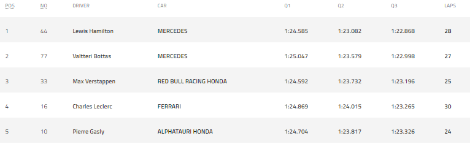

Grid de largada (5 primeiros pilotos):
Resumo da corrida:
A corrida em si foi emocionante, as estratégias de pit-stop foram fundamentais, principalmente no último quarto da prova que decidiu toda a dinâmica das posições. A corrida inteira desde o início contou com a presença de uma chuva leve a qual prejudicou alguns pilotos como: Charles Leclerc e Lewis Hamilton que decidiram tardiamente a trocar o jogo de pneus. Com isso, os carros da RedBull se destacaram na pontuação dessa prova. A corrida não toi totalmente perdida para a Mercedes, Valteri Bottas fez uma brilhante prova de ponta a ponta e dominou a pista, levando assim, a pontuação de primeiro colocado para a equipe.